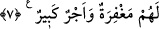

“O” şeytan, “kendi taraftarlarını” yâni cemâat ve kendisine tâbi olanları “ancak
ateş ehlinden olmaya” yâni kendisine tâbi olanları hevâ ve hevese tâbi olmaya ve
dünyaya meyletmeye “çağırır.” Te’vilât’ta der ki, “Hizb-i Şeytan” tabiri, Allah’tan yüz
çevirip O’nun dışındakilerle meşgul olanları ifâde eder. “Ashâb-ı saîr” ifâdesi de aynı
mânâyı ifâde etmektedir ki âhirette kendisiyle ateş yârânı olanlar, yâni cehennem
dostları demektir.
İrşad’da der ki, burada şeytanın düşmanlığı takrir ve beyân edilmiş ve insanlar
şeytana itâatten sakındırılmıştır. Bu takrir ve uyarıda şuna da tenbih vardır: Şeytanın
kendi taraftar ve yandaşlarını nefis ve hevâlarına uymaya ve dünya lezzetlerine
meyletmeye çağırması, onların dünyevi menfaat ve maslahatlarını tahsil ve temin etmek
için değildir. Halbuki dünyada birbirini seven insanların birbirlerinin hâcetlerine
koşmaktaki maksatları budur. Şeytan bilakis yandaşlarını hiç hesap etmedikleri cihetten
tehlike ve tuzağa düşürüp ebedi azâba atmaktadır.
7. İnkâr edenler için şüphesiz çetin bir azap var, îman edip iyi işler yapanlara da
mağfiret ve büyük bir mükâfat vardır.
Îman etmeleri gerekli olan şeyleri “inkâr edenler” ve bu inkârda ısrar edenler “için”
inkârları ve şeytanın dâvetine icâbet etmeleri sebebiyle hem dünyada hem âhirette
“şüphesiz çetin bir azap var...”
Bu azâbın peşin (muaccel) olanı kalplerinin dağılması, basîretlerinin kapanması,
himmetlerinin bayağı olmasıdır. Artık onlar, mâbûd olarak putlara, nefis ve hevâlarına,
dünya ve şeytana râzı olurlar. Ertelenmiş (müeccel) olanı ise âhiret azâbı olup bunun da
zorluk ve şiddeti gizli değildir.
“Îman” ve yakînde sebat “edip” îman nûrunun artmasını temin ve Allah rızası için
“iyi işler yapanlara da” îmanları ve iyi işleri sebebiyle –ki şeytana düşmanlık da bu
cümledendir- büyük “mağfiret” yâni dünyada günahlarının örtülmesi –ki böyle olmasa
rezil-rüsvay olurlardı- âhirette amel defterlerinden günahlarının silinmesi –ki böyle
olmasa helâk olurlardı- “ve” sonsuz-sınırsız “büyük bir mükâfat vardır.” Bugün
ibadetin kolay olması, mârifetin devâmı, kalbe ulaşan yakîn, lütuf ve ihsanlar ile nice
özel haller ve türlü türlü ilâhî mevhibeler bu dünyadaki mükâfât cümlesindendir.
Âhirette ise istenilenin gerçekleşmesi, umulandan daha fazla ihsanlara nâil olmaktır.
Denilir ki, Allah Teâlâ’nın sâlihleri tezyin etmesinin misâli ve benzeri şudur: Bir ordu
ve askerî bir birlik düşünün. Yarın yapılacak tören ve sunum için sultan ve komutan
onlara en güzel şekilde ziynetlerini takınmalarını ve üniformalarını giymelerini